24 external source records and two internal records are not 24 measured buildings. This atlas combines existing examples, design proposals, construction typologies and technical controls. Their standing stays attached to every claim.
Thumbnails are original numerical abstractions or modelling proposals. Third-party photographs and drawings remain at their source links; no generated imagery is evidence. Local inspection copies are not redistributed.
CA1Existing-building preservation surveyMid-Century Modern in the City of Sacramento: Historic Context Statement and Survey Results

PROPOSAL thumbnail: illustrates a possible modelling consequence, not this source building.
Tract ranch differs from larger architect-designed Ranch Modern. Low roofs, broad eaves and framed glazing also occur in commercial work. Examples include 4910 South Land Park Drive, former office 2729 I Street and industrial 8151 Fruitridge Road.
Limit: Selected distinctive survivors; no stock frequency or measured footprint adopted.
GEI Consultants; Mead & Hunt; City of Sacramento · 2017-09-30 · PDF 68,70,114; printed 3-10,3-12,5-10
Open primary source / drawings and photographs
Inspection: Researcher visually inspected selected photos; coordinator text review
Reuse: No image redistribution licence established; original analytical diagrams only; source images linked.
CA2Representative regulatory illustration, separate existing photographReport 4: Missing Middle Housing Zoning, Design + Policy Recommendations
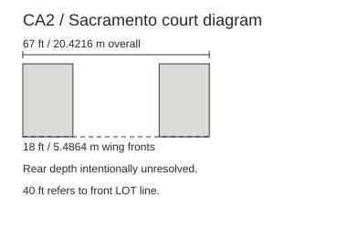
Numerical abstraction; unknown boundaries stay unresolved.
Diagram labels 18 ft street-facing wings, 67 ft overall width, 40 ft from front lot line. The photograph below is a different building.
Limit: The 40 ft label is not building depth; no whole floor plate or dwelling count established.
Opticos Design and consultants; City of Sacramento · 2024-05 · PDF/printed 49; waste p52
Open primary source / drawings and photographs
Inspection: Researcher and coordinator visually inspected p49
Reuse: No image redistribution licence established; original analytical diagrams only; source images linked.
CA3Municipal design guidanceCountywide Design Guidelines — Commercial
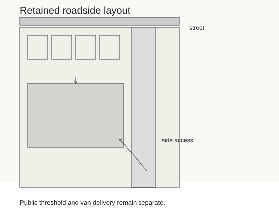
PROPOSAL thumbnail: illustrates a possible modelling consequence, not this source building.
Guidance connects storefront walks, equipment screening and service enclosures with site design. Proposed unobstructed storefront walk is 8 ft.
Limit: Desired redevelopment differs from existing auto-oriented corridor; not a surveyed sidewalk. Old county PDF now redirects.
Sacramento County · Undated live chapter · 4.2.4–5;4.4.2;4.4.6
Open primary source / drawings and photographs
Inspection: Researcher text inspected; coordinator independently reopened
Reuse: No image redistribution licence established; original analytical diagrams only; source images linked.
CA4Municipal design guidanceCountywide Design Guidelines — Office/Industrial
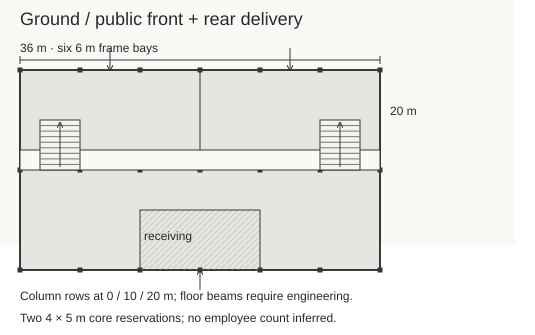
PROPOSAL thumbnail: illustrates a possible modelling consequence, not this source building.
Reception/public business toward street; loading/manufacturing to service sides. Continuous parapets and integrated vents, rooflights and equipment are useful design controls.
Limit: Not measured ordinary office or workshop dimensions; guidance is not a prevalence survey.
Sacramento County · Undated live chapter · 5.2.3–4;5.4.1–2
Open primary source / drawings and photographs
Inspection: Researcher text inspected; coordinator independently reopened
Reuse: No image redistribution licence established; original analytical diagrams only; source images linked.
CA5Retrofit construction proposal for existing buildingEl Centro Opportunity Center Roof Improvements
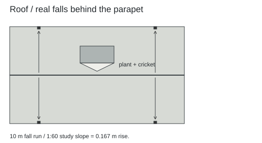
PROPOSAL thumbnail: illustrates a possible modelling consequence, not this source building.
Stepped roof extent 84 ft 9 in; joists/metal deck, masonry parapets, curbs, crickets, internal drains and scuppers.
Limit: Completion unverified; extent not rectangular footprint. Ohio construction control, not Sacramento regional example.
CPL; City of Lorain · 2025-08-07 · A201, A450 / PDF 2–3
Open primary source / drawings and photographs
Inspection: Researcher inspected both sheets; coordinator independently inspected A450 and A201
Reuse: No image redistribution licence established; original analytical diagrams only; source images linked.
CA6Manufacturer calculationSpecTopics: Energy Codes and Roof Drains
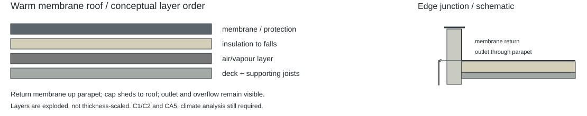
PROPOSAL thumbnail: illustrates a possible modelling consequence, not this source building.
An 8 × 8 ft sump uses quarter-inch-per-foot slope; tapered insulation allows drainage without tilting the structural ceiling.
Limit: 1/4 in/ft is exactly 1:48, approximately 2%; example is not universal code or insulation thickness. Final availability recheck failed (502); no current access guarantee.
Craig Tyler; Carlisle SynTec Systems · 2021-05-17 · Worked sump example
Open primary source / drawings and photographs
Inspection: Researcher text inspected
Reuse: No image redistribution licence established; original analytical diagrams only; source images linked.
LA1Documented existing districtHayworth Dingbat Apartment Historic District
18 two-storey apartment buildings from 1956–65; six to ten units per building reported; near-flat roofs and open carports.
Limit: Not Sacramento; no measured plans. Counts are source-reported, not window-inferred.
HistoricPlacesLA; City of Los Angeles · Evaluation 2015-01-22; report 2026-07-06 · Resource description
Open primary source / drawings and photographs
Inspection: Researcher primary text inspected
Reuse: No image redistribution licence established; original analytical diagrams only; source images linked.
LA2Historic typologyLos Angeles Citywide Historic Context: Multi-Family Residential Development
Dingbat features include exterior stairs/corridors and tuck-under parking.
Limit: No inspected whole-building drawing; broad type count cannot replace Hayworth district count.
City of Los Angeles; SurveyLA · Exact edition date unverified · Printed 80
Open primary source / drawings and photographs
Inspection: Indexed primary text only; direct retrieval failed
Reuse: No image redistribution licence established; original analytical diagrams only; source images linked.
US1Design models, not built surveys; actual cover date overrides stale URLSouth Bend Neighborhood Infill: Pre-approved, ready-to-build housing
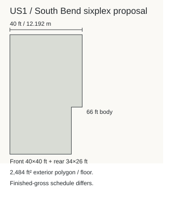
Numerical abstraction; unknown boundaries stay unresolved.
Sixplex schedule: six units, two storeys; 40 ft front width, 34 ft rear width, 66 ft body depth; 72 ft depth including stoop is rounded. Finished gross is 4,840 sq ft.
Limit: Stepped external envelope is not 40 × 72 ft solid floor. Published finished gross differs from polygon arithmetic; preserve both.
City of South Bend; catalogue design team · 2025-10-07 · PDF 12,20,22 / printed 11,19,21
Open primary source / drawings and photographs
Inspection: Coordinator re-inspected source image this pass; Downloaded; selected plans visually inspected with PDFKit. Parent independently inspected sixplex.
Reuse: No image redistribution licence established; original analytical diagrams only; source images linked.
NL1Design proposal; beukmaat is not established external width; GBO is usable areaHogekwartier te Amersfoort; appendix Ontwerp Woningprogramma, Veld 3–4
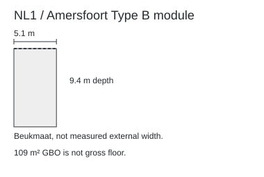
Numerical abstraction; unknown boundaries stay unresolved.
Housing programme combines flat and pitched types. Type B uses 5.1 m beukmaat and 9.4 m depth, with 109 m² GBO in the inspected schedule.
Limit: Beukmaat is structural/module width, not verified external width. GBO is usable, not game counted floor. Indexed variant table differs from inspected PDF.
Alcedo / Municipality of Amersfoort · 2018-04-25 · PDF 15 / printed 14, block schedule
Open primary source / drawings and photographs
Inspection: Coordinator re-inspected source image this pass; Downloaded 32MB PDF; schedule and axon independently visually inspected; indexed schedule differs.
Reuse: No image redistribution licence established; original analytical diagrams only; source images linked.
PNW1Proposal; built status unverified15th Live Work, 355 15th Ave: Design Review
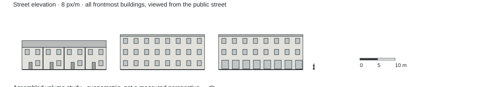
PROPOSAL thumbnail: illustrates a possible modelling consequence, not this source building.
Live/work proposal has roof/access/elevation drawings; useful link between separate entrances and contemporary massing.
Limit: Retained prior source; not newly measured. Scope and caveats remain those of previous source record.
Chris Pardo Design: Elemental Architecture / City of Seattle · 2013-01-15 · PDF 13,16,17,22 / sheets 12,15,16,21
Open primary source / drawings and photographs
Inspection: Retained previous verification; no fresh retrieval claimed
Reuse: No image redistribution licence established; original analytical diagrams only; source images linked.
NL2Builder-reported built project; approximate/ranged dimensions not paired unit records51 gasloze en energieneutrale woningen Het Larense Veld in Almere Haven
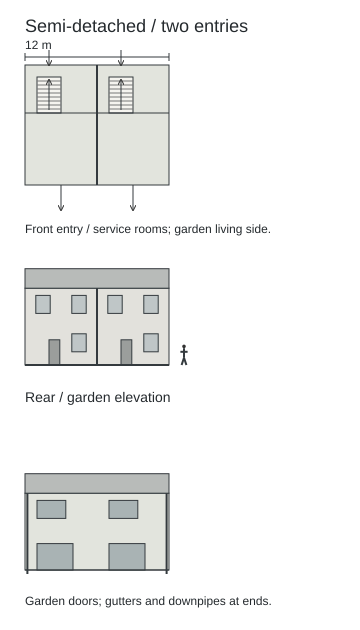
PROPOSAL thumbnail: illustrates a possible modelling consequence, not this source building.
Builder reports completed contemporary housing with varied house types; corroborates that Dutch contemporary stock is not one gable.
Limit: Retained prior source; not newly measured. Scope and caveats remain those of previous source record.
BAM Wonen; Schippers Architecten · Delivered 2019-08 · Project description / Cijfers en feiten
Open primary source / drawings and photographs
Inspection: Retained previous verification; no fresh retrieval claimed
Reuse: No image redistribution licence established; original analytical diagrams only; source images linked.
RFT1Built transformation; date and existing-area definitions conflict within sourceTransformation of 530 dwellings, blocks G H I, Grand Parc

PROPOSAL thumbnail: illustrates a possible modelling consequence, not this source building.
Grand Parc demonstrates addition of winter gardens/balconies during transformation; exceptional retrofit mechanism, not ordinary default.
Limit: Retained prior source; not newly measured. Scope and caveats remain those of previous source record.
Lacaton & Vassal / Druot / Hutin · 2016 completion text; 2017 header · Project text / programme
Open primary source / drawings and photographs
Inspection: Retained previous verification; no fresh retrieval claimed
Reuse: No image redistribution licence established; original analytical diagrams only; source images linked.
RFT2Built retrofit phases; first pilot and later systems differNottingham Energiesprong homes
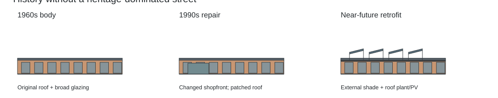
PROPOSAL thumbnail: illustrates a possible modelling consequence, not this source building.
Nottingham pilot demonstrates prefabricated energy retrofit; pilot and later phases have different systems.
Limit: Retained prior source; not newly measured. Scope and caveats remain those of previous source record.
Energiesprong UK / Nottingham City Homes / Melius / Studio Partington · 2017 pilot; later phases described · Full list of measures
Open primary source / drawings and photographs
Inspection: Retained previous verification; no fresh retrieval claimed
Reuse: No image redistribution licence established; original analytical diagrams only; source images linked.
MAT1Modern UK product control from first pass, not regional architecture definitionStandard format bricks
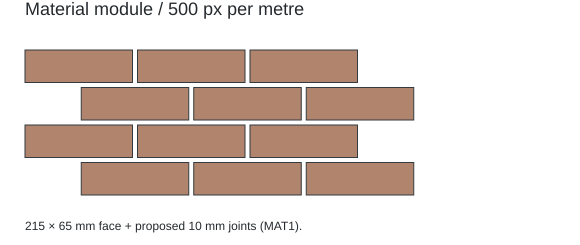
Numerical abstraction; unknown boundaries stay unresolved.
Modern UK brick product: 215 × 102.5 × 65 mm. Not a universal European module.
Limit: Retained prior source; not newly measured. Scope and caveats remain those of previous source record.
Wienerberger · Undated · Product dimensions
Open primary source / drawings and photographs
Inspection: Retained previous verification; no fresh retrieval claimed
Reuse: No image redistribution licence established; original analytical diagrams only; source images linked.
C4Product-specific calculated span limits; not an installed building surveyKerto-Ripa: Prefabricated Building Elements
T-element span table distinguishes roof and residential-floor capacities under listed load assumptions; 7 m roof span does not imply 7 m floor span.
Limit: Retained prior source; not newly measured. Scope and caveats remain those of previous source record.
Metsä Wood · Undated downloaded edition · PDF/printed 25, T-element span table and assumptions
Open primary source / drawings and photographs
Inspection: Retained previous verification; no fresh retrieval claimed
Reuse: No image redistribution licence established; original analytical diagrams only; source images linked.
DK1Existing character plus adopted infill planLokalplan 609 Tingbjerg, kommuneplantillæg nr.9 og miljørapport
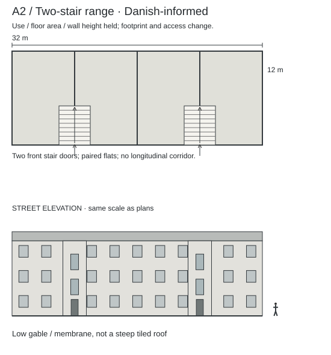
PROPOSAL thumbnail: illustrates a possible modelling consequence, not this source building.
Existing three-storey brick ranges use 11° felt gables. Infill and road dimensions are separately specified. Gardens, street sides and garages differ visibly.
Limit: Protected designed estate, not all Copenhagen. Plan gives 1956–75; municipal KP2024 profile gives 1956–70. New infill limits include named exceptions.
Københavns Kommune · Adopted 2021-12-16; announced 2022-01-20 · 6–7 existing;15 proposal;47 envelopes;78 sheet3b1
Open primary source / drawings and photographs
Inspection: Researcher visually inspected 7,15,78; coordinator inspected 7,78
Reuse: No image redistribution licence established; original analytical diagrams only; source images linked.
DK2Representative construction typologyTypehuset 1960–79: katalog over typiske løsninger og principper
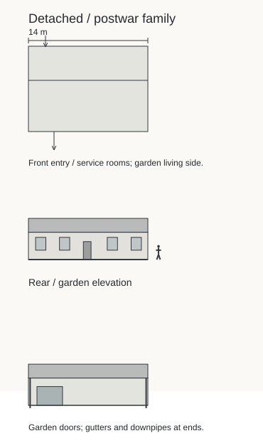
PROPOSAL thumbnail: illustrates a possible modelling consequence, not this source building.
Trusses span between facades; garden-side living glazing differs from service/entrance side. Wall types 29–35 cm.
Limit: No measured address or plan dimensions. Low-pitch sheets and higher-pitch clay covering are separate systems; do not transfer all details between them.
Mur & Tag / EUDP · Undated; bibliography includes 2012 · 2–7
Open primary source / drawings and photographs
Inspection: Researcher text inspected; coordinator visually inspected pp6–7
Reuse: No image redistribution licence established; original analytical diagrams only; source images linked.
DK3Instructional reconstructionDanske Bygningsmodeller — Type 5
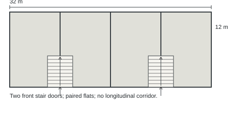
PROPOSAL thumbnail: illustrates a possible modelling consequence, not this source building.
Transverse bearing walls support floors; longitudinal facades can be nonbearing. Early flat and later raised roofs both occur.
Limit: Do not silently apply the whole system to Tingbjerg brick ranges. Layer thickness alone does not define roof angle.
Grundejernes Investeringsfond; Realdania; Byggeskadefonden · Undated · Type5 and original roof/facade linked detail
Open primary source / drawings and photographs
Inspection: Researcher HTML text inspected; interactive detail not visually inspected
Reuse: No image redistribution licence established; original analytical diagrams only; source images linked.
ES1Representative energy-typology examplesCatálogo de tipología edificatoria residencial
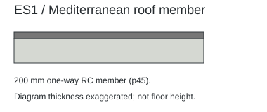
Numerical abstraction; unknown boundaries stay unresolved.
1960–79 Mediterranean MFH example: 4 floors, 16 dwellings, 1089.70 m² S.Habitable; roof section has ceramic finish, waterproofing, fall-forming concrete and 200 mm one-way RC floor.
Limit: No footprint supplied. Example areas are not statistically representative; photograph locality not verified as Valencia. Habitable area is not gross floor.
IVE; Generalitat Valenciana; Ortega Madrigal (coord.); García-Prieto Ruiz et al. · 2016-01 · 5–6 caveats;43 and45 examples
Open primary source / drawings and photographs
Inspection: Researcher visually inspected 43,45; coordinator independently inspected45
Reuse: No image redistribution licence established; original analytical diagrams only; source images linked.
ES2Legacy regulatory relationshipPGOU Normas Urbanísticas (transcription)
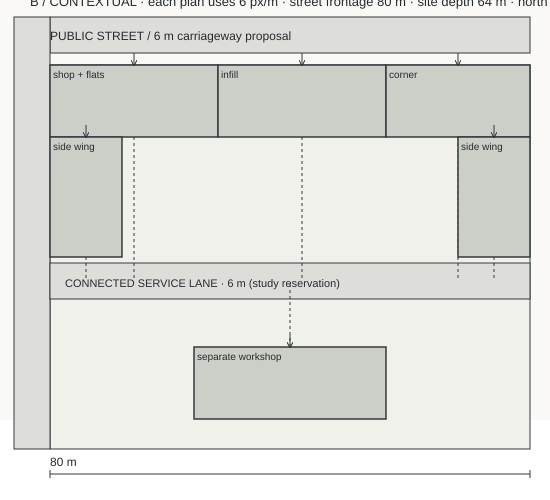
PROPOSAL thumbnail: illustrates a possible modelling consequence, not this source building.
Ensanche housing can coexist with specified workshop/storage uses, with separate street access and independent circulation under stated conditions.
Limit: Not a measured block or current legal guidance; current applicability not established.
Ayuntamiento de Valencia; Oficina Municipal del Plan · Legacy document; consolidation date unverified · 93–94; article6.17
Open primary source / drawings and photographs
Inspection: Researcher text inspected
Reuse: No image redistribution licence established; original analytical diagrams only; source images linked.
C1Representative structural design guidanceScheme development: Overview of structural systems for single-storey buildings; SS048a-EN-EU
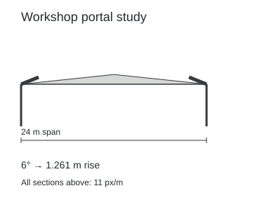
PROPOSAL thumbnail: illustrates a possible modelling consequence, not this source building.
Drawings distinguish portals, purlins, bracing, cladding, haunches and office/mezzanine variants. Indicative frame spacing and spans are not engineering limits.
Limit: 2006 guidance 15–60 m spans differs from current portal page 15–50 m: scopes/editions differ; neither is a game bound.
Access Steel; SCI/European steel guidance · 2006-era; cover undated · 3,7–8,14–16
Open primary source / drawings and photographs
Inspection: Coordinator downloaded and visually inspected pp7,14
Reuse: No image redistribution licence established; original analytical diagrams only; source images linked.
C2Manufacturer commentary on standardComment: BS6229:2025

PROPOSAL thumbnail: illustrates a possible modelling consequence, not this source building.
Commentary replaces blanket 1:40 design prescription with completed-fall requirement and project analysis; discusses crickets and secondary overflow.
Limit: Manufacturer interpretation, not independently reviewed standard or global regulation; zero-fall exceptions have specific systems.
Nigel Blacklock; Bauder Limited · 2026-05 · 4 layer diagrams; 5 drainage; 3 overflow
Open primary source / drawings and photographs
Inspection: Coordinator downloaded; visually inspected pp. 4–5
Reuse: No image redistribution licence established; original analytical diagrams only; source images linked.
C3General manufacturer guidanceFlat roof design considerations
General page still states a 1:40 design fall to achieve a 1:80 completed fall.
Limit: Conflicts with dated C2 commentary. Retain conflict; use proposed slopes in research, not a compliance assertion.
Bauder Limited · Undated live page · Creating falls; Drainage
Open primary source / drawings and photographs
Inspection: Coordinator primary text inspected
Reuse: No image redistribution licence established; original analytical diagrams only; source images linked.
P1Proposed game research dimensionsAuthored research geometry
Original diagrams supply concrete comparisons. They are proposals, not measured evidence.
Limit: No simulation allocation, engineering certification or player preference implied.
city-sim architecture research pass03 · 2026-09-07 · draw.py; model briefs
Open primary source / drawings and photographs
Inspection: Arithmetic and sampled visual checks; see validation
Reuse: Original research vector diagrams.
R1Archived game dataArchived checkpoint reconstruction
52 components and unique IDs in this capture; positive-area floor/capacity arithmetic recomputed.
Limit: Fixture-specific, not citywide distribution.
city-sim repository · d9addc3 · audit.py and reproduction.json
Open primary source / drawings and photographs
Inspection: Fresh reconstruction; not fresh simulation
Reuse: Repository research data.
Measured ordinary European retail, office and workshop plans; verified whole-block València dimensions; current local code compliance; consistent floor-to-floor surveys. The contextual drawings supply concrete proposed alternatives without pretending these gaps are filled.